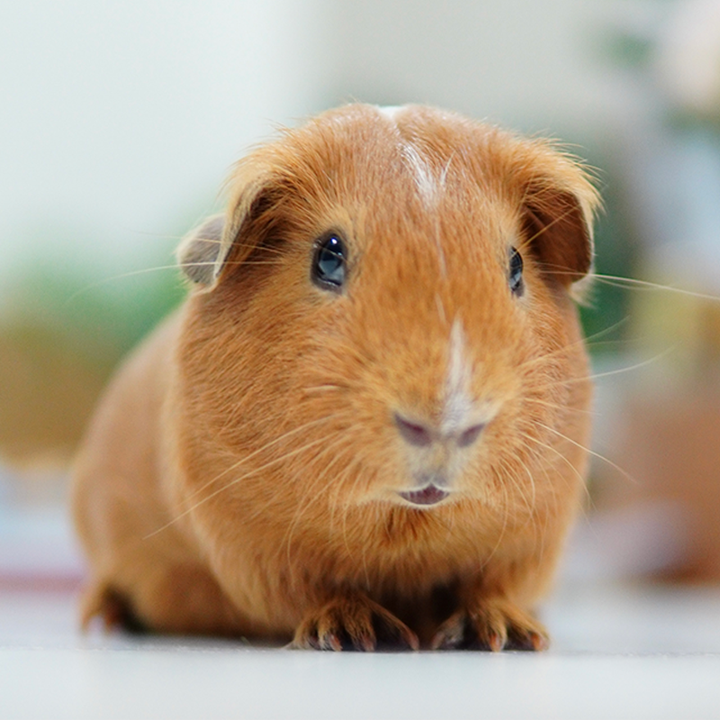

Here is a little piece of who we are!
Founded in 2018 by a small group of Minneapolis St. Paul animal advocates, Twin Cities Animal Rescue started around a simple reality: local shelters were frequently at capacity, yet hundreds of compassionate community members had spare rooms and open hearts.
By moving away from costly institutional shelters and investing directly in a community foster network, we have grown into a responsive, grassroots rescue capable of taking in animals during critical situations and giving them individualized attention from day one.

At Twin Cities Animal Rescue, we strive to uphold these values:
- Compassionate Action: We step forward when animals need advocacy, urgent medical attention, and safe shelter.
- Community Trust: We operate with total financial and operational transparency, ensuring supporters and adopters know exactly where their trust and resources go.
- Lifelong Commitment: Our responsibility to our animals does not end at adoption; we provide post-adoption resources and a safety net for life.
- Inclusivity & Support: We believe great pet parents come from all walks of life, and we prioritize open, non-judgmental adoption counseling.
We don't want to forget our partners either.
Our rescue work relies on trusted veterinary clinics, local businesses, and regional animal welfare alliances. We extend our sincere gratitude to:
- Twin Cities Metro Veterinary Clinics: For emergency triage, routine wellness exams, and subsidized spay/neuter care.
- Local Pet Supply Outlets: For generously hosting our weekend meet-and-greets and organizing seasonal food drives.
- Regional Shelter Partners: For collaborating closely with us to transport and rehome pets at risk of overcrowding.